授業で制作した宇佐合気道会のホームページ。約9ヶ月の成長をBefore/Afterで比較しています。
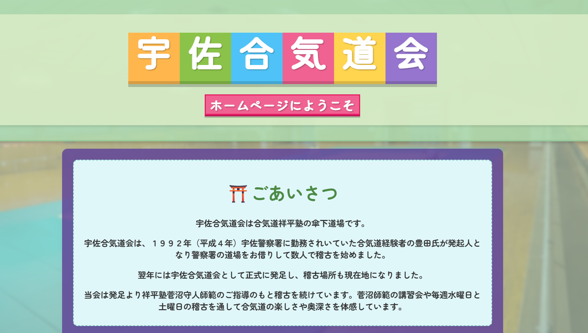
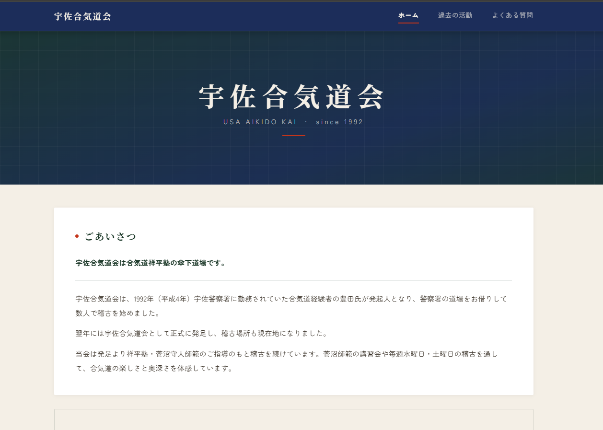
趣味で作ったロゴデザイン２点。サークル活動として制作した名刺デザイン４点。学校・学科・専攻ごとに異なるコンセプトで制作しました。
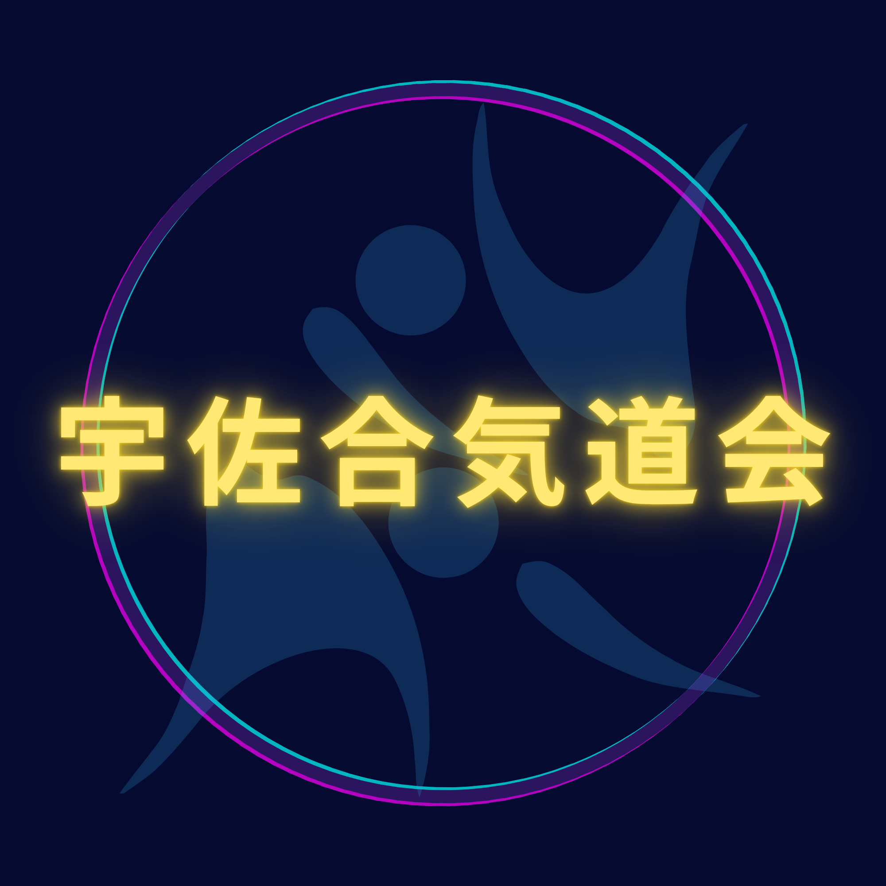
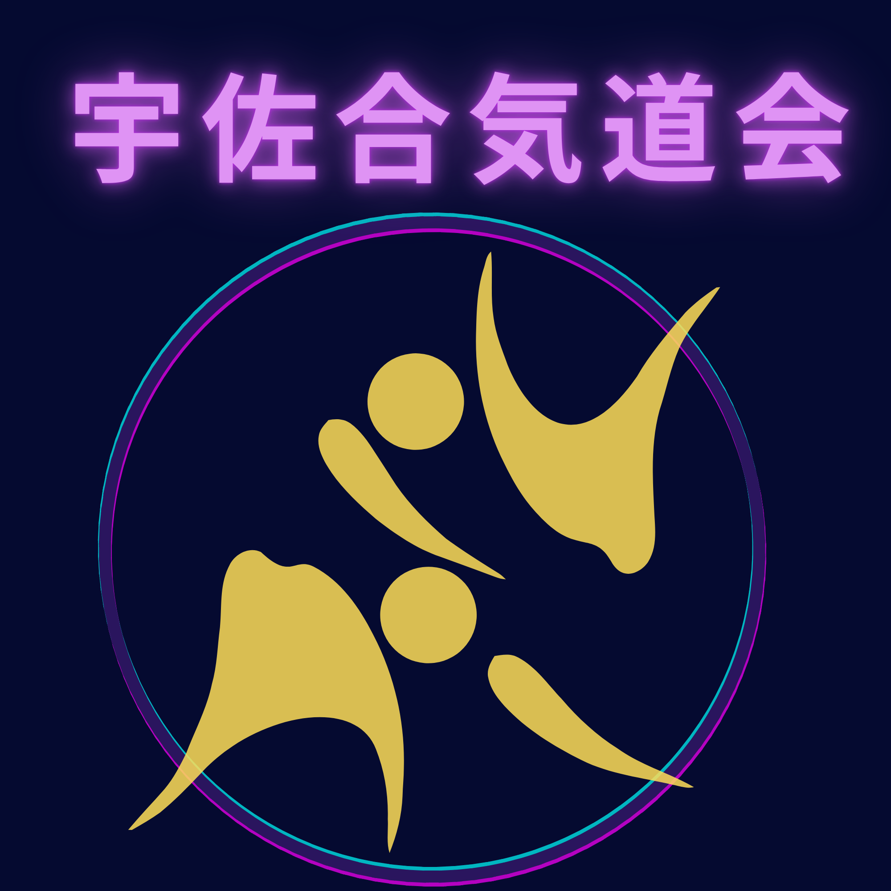
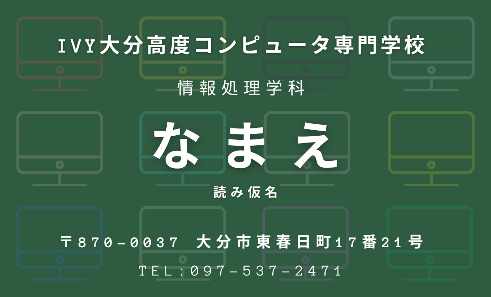
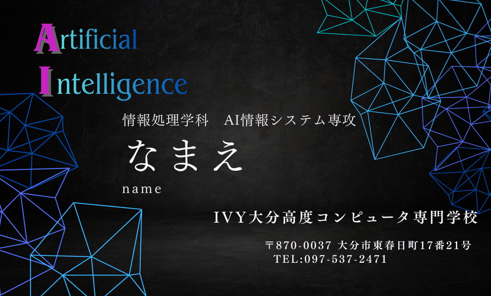
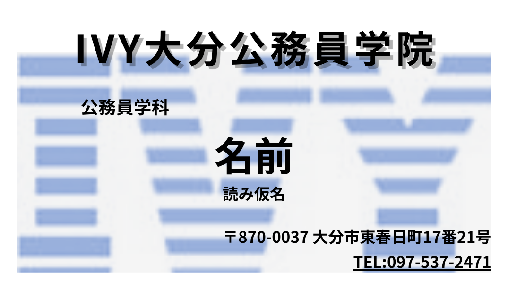
サークル活動（I.C.C）で制作した勧誘ポスター3点。「誰にでも伝わりやすいデザイン」を意識して制作しました。
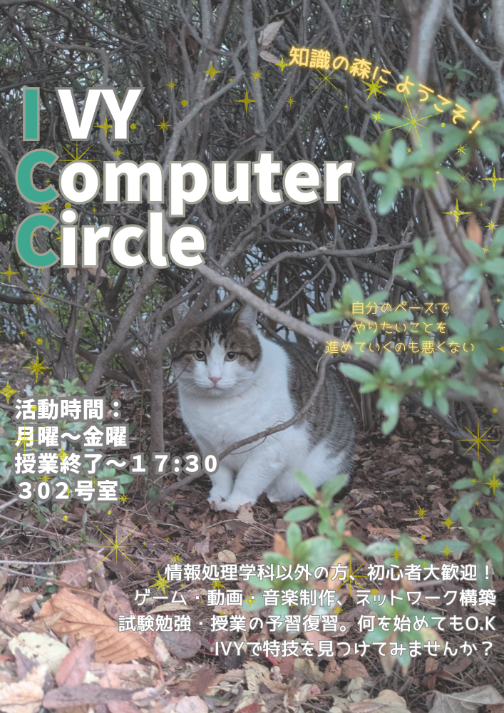
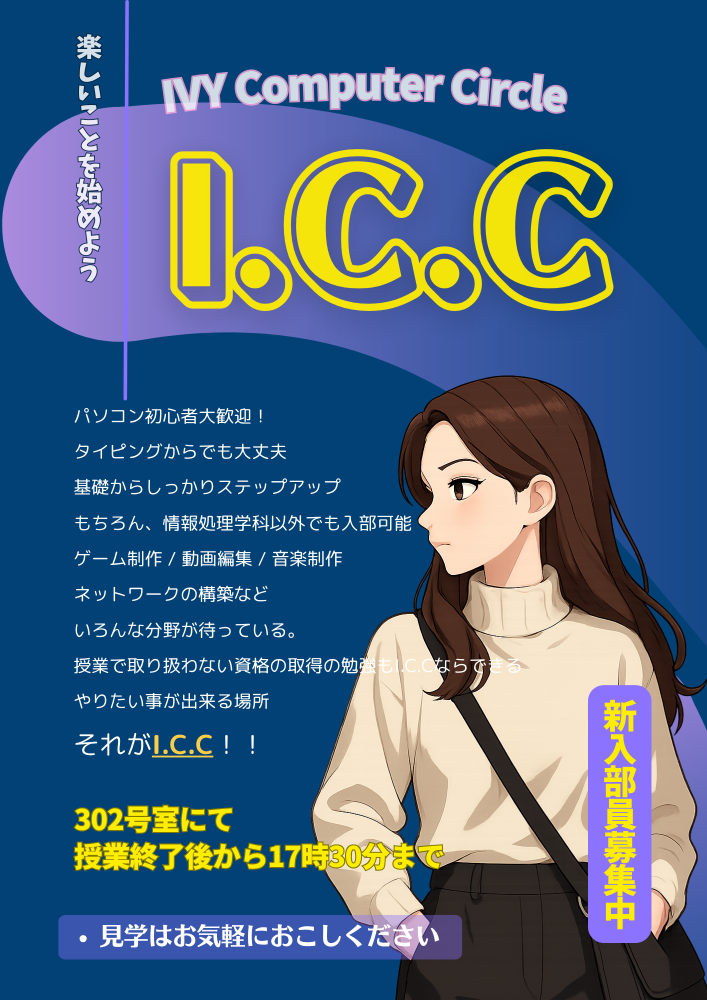
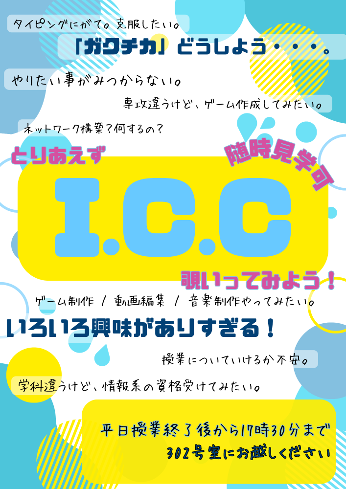
授業課題として制作したプレゼンスライド（全17枚）。「デジタルディバイド」をテーマに子ども向けのわかりやすい表現を追求しました。
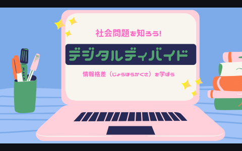
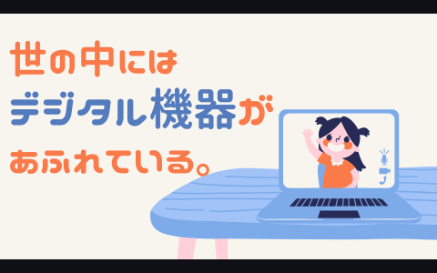
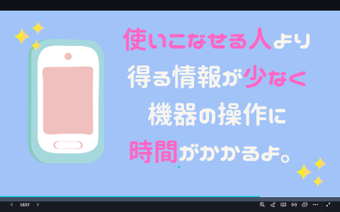
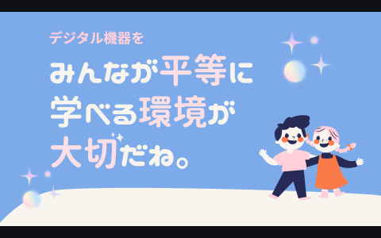
宇佐合気道会HPのログイン機能として制作。ログイン → ID/PW忘れ対応 → 完了画面の流れを実装しました。
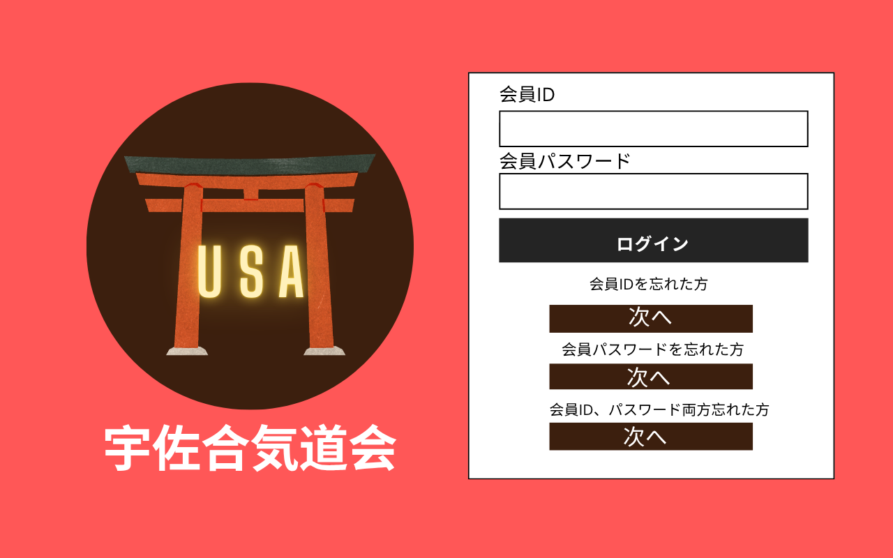
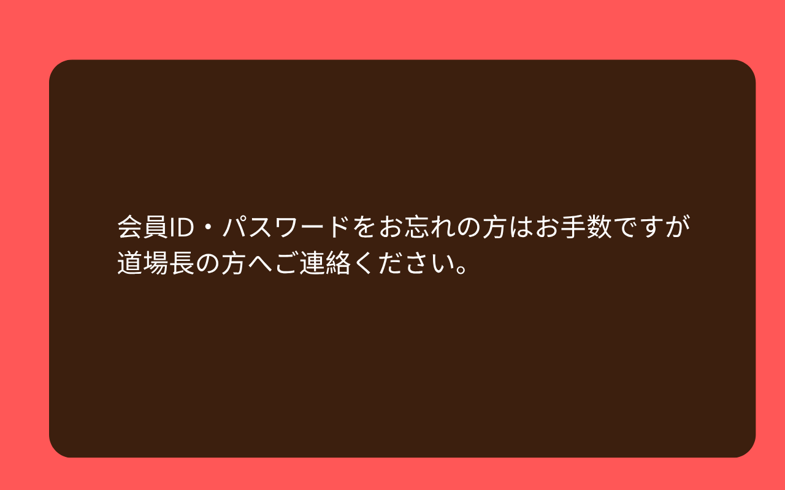
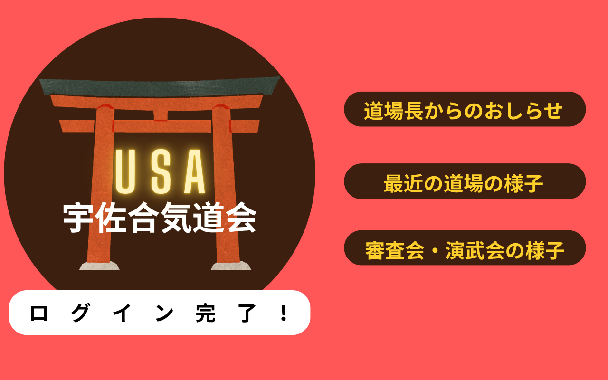
サークル活動で制作した15秒のデジタルサイネージ用動画2点。Canvaのアニメーション機能を活用しました。